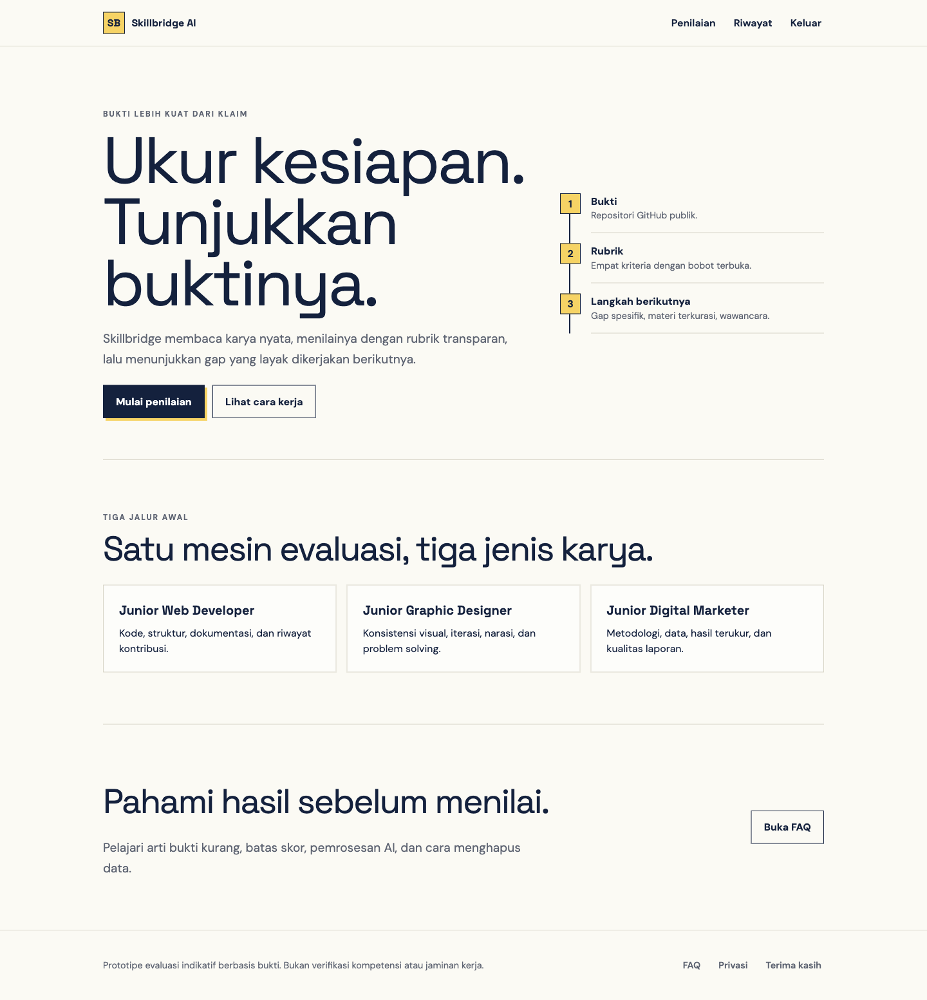
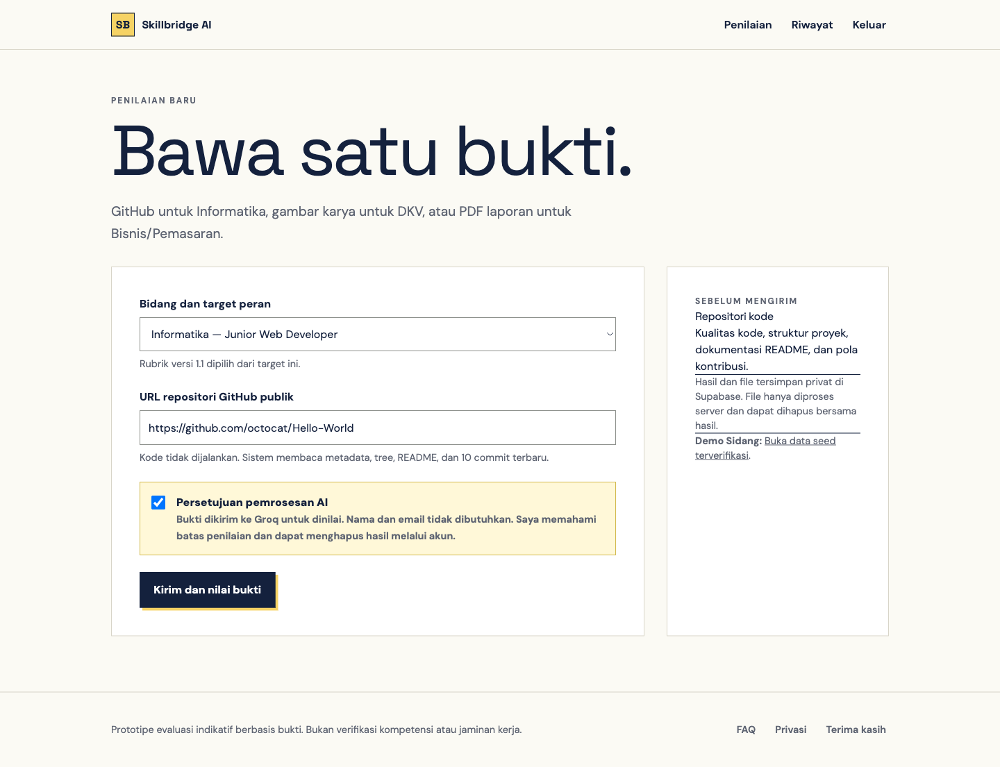
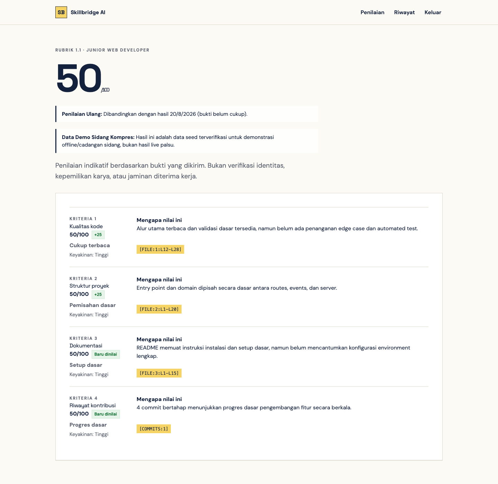
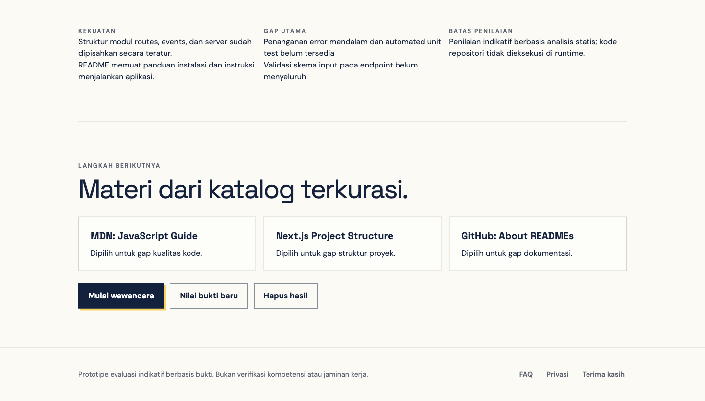
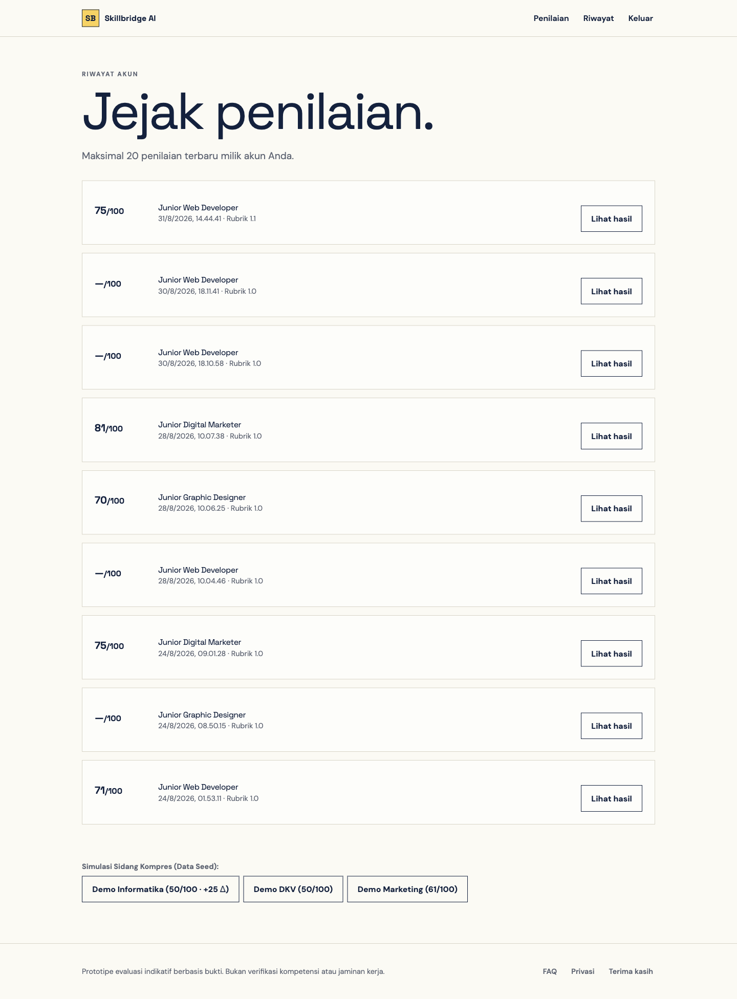
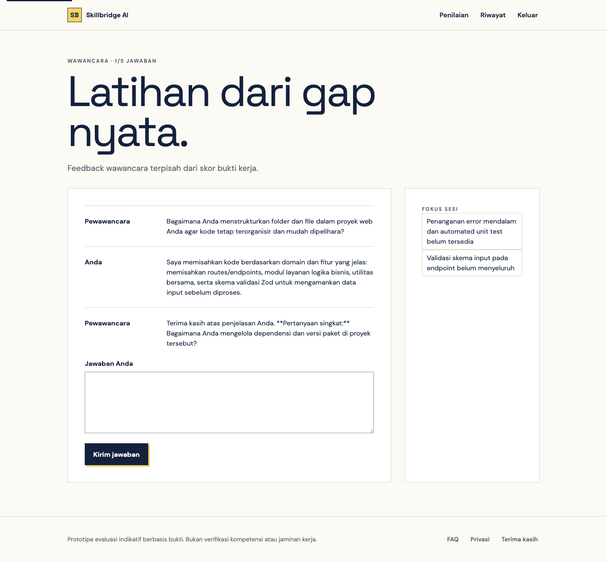

Informasi Dokumen: - Nama Aplikasi: Skillbridge AI - Versi Rilis: v1.0.0 (Production & Prototype Release) - Tautan Live Deployment: https://skillbridge-6ndn.vercel.app - Repositori Resmi: https://github.com/rianszzz/skillbridge - Tanggal Pembaruan: September 2026 - Target Pembaca: Administrator Sistem, Penguji Teknis, Reviewer/Klien, dan Pengguna Akhir (Mahasiswa/Lulusan Baru)
Skillbridge AI adalah platform inovasi evaluasi kesiapan kerja (job-readiness assessment) berbasis bukti portofolio otentik bagi mahasiswa tingkat akhir dan lulusan baru. Berbeda dengan platform konvensional yang hanya melakukan pencocokan kata kunci pada teks CV (resume parsing), Skillbridge AI melakukan analisis substantif terhadap karya nyata di tiga disiplin ilmu utama: 1. Informatika (Junior Web Developer): Mengevaluasi repositori kode sumber publik, struktur direktori, kualitas arsitektur, dokumentasi README, dan riwayat commit Git. 2. Desain Komunikasi Visual / DKV (Junior Graphic Designer): Mengevaluasi karya visual digital (PNG/JPEG) bersama penjelasan proses kreatif, hierarki visual, konsistensi warna/tipografi, dan pemecahan masalah desain. 3. Bisnis & Pemasaran Digital (Junior Digital Marketer): Mengevaluasi dokumen laporan kampanye pemasaran dalam format PDF, metodologi funnel, ketepatan metrik (CTR, CPA, ROAS), dan transparansi batasan data.
Sistem dirancang dengan filosofi siklus pembelajaran tertutup (closed-loop learning), di mana asesmen tidak berhenti pada perolehan nilai semata, melainkan memandu peningkatan berkelanjutan:
[Bukti Kerja Otentik]
↓
[Ekstraksi & Validasi Statis]
↓
[Penilaian Rubrik 1.1 Berbobot (Server-Calculated)]
↓
[Analisis Kesenjangan (Skill Gaps) & Kurasi Materi Belajar]
↓
[Latihan Wawancara Teknis Adaptif Berbasis Gap]
↓
[Penyerahan Bukti Baru & Pengukuran Peningkatan (+Δ Diff)]Untuk mengakses dan menggunakan platform Skillbridge AI melalui
peramban web: - Perangkat: Komputer desktop, laptop,
tablet, atau smartphone (antarmuka responsif penuh). - Peramban
Web (Browser): Google Chrome (v100+), Mozilla Firefox (v100+),
Microsoft Edge (v100+), Apple Safari (v15+). - Koneksi
Internet: Minimal 1 Mbps stabil (untuk transmisi upload bukti
dan streaming respon AI). - Format Bukti yang Didukung:
- Tautan URL Repositori GitHub Publik (format:
https://github.com/pemilik/nama-repo). - Gambar Portofolio
DKV: Format PNG atau JPEG, resolusi maksimal 10.000 × 10.000 piksel,
ukuran file ≤ 4 MB. - Dokumen Laporan
Pemasaran: Format PDF asli (bukan hasil scan foto) dengan text
layer, maksimal 15 halaman, ukuran file ≤ 4
MB.
Jika ingin melakukan instalasi mandiri dari kode sumber (source
code): - Sistem Operasi: macOS, Linux
(Ubuntu/Debian/Fedora), atau Windows 10/11 (disarankan memakai WSL2). -
Runtime Lingkungan: Node.js versi 20.x LTS atau versi
22.x LTS (disertai npm versi 9.x+). - Git:
Git CLI versi 2.30+ untuk clone repositori. - Akun Layanan
Eksternal (Tersedia Paket Gratis / Free Tier): -
Supabase Account: Untuk penyediaan PostgreSQL database,
Supabase Auth, dan private file storage bucket. - Groq Cloud API
Key: Untuk engine inferensi model LLM kecepatan tinggi
(openai/gpt-oss-20b dan vision model multimodal).
evidence-private).Penguji atau klien memiliki dua pilihan untuk mengevaluasi aplikasi: 1. Jalur Cepat (Recommended): Membuka tautan deployment cloud resmi yang sudah online 24/7 di Vercel. 2. Jalur Lokal (Self-Hosted): Menginstal dan menjalankan aplikasi pada mesin komputer lokal penguji.
Aplikasi telah terpasang secara utuh pada infrastruktur cloud Vercel
produksi: - Alamat URL: https://skillbridge-6ndn.vercel.app
- Status Endpoint Health Check: https://skillbridge-6ndn.vercel.app/api/health
(harus menghasilkan {"status":"ok"}).
Pada jalur ini, Anda tidak perlu menginstal apa pun di komputer Anda. Anda dapat langsung melompat ke BAB III. PANDUAN PENGGUNAAN APLIKASI.
Bagi penguji teknis yang ingin meninjau source code dan menjalankan aplikasi secara lokal, ikuti 5 langkah terstruktur berikut:
Buka aplikasi Terminal (pada macOS/Linux) atau Git Bash (pada Windows), lalu jalankan perintah:
# 1. Clone repositori dari GitHub
git clone https://github.com/rianszzz/skillbridge.git
# 2. Masuk ke direktori proyek
cd skillbridgePastikan Node.js v20 atau v22 telah terpasang pada komputer Anda
(node -v). Pasang seluruh paket dependensi dengan
menjalankan:
npm installTunggu hingga proses instalasi selesai. Seluruh pustaka Next.js,
React, Supabase SDK, dan utility akan terpasang di folder
node_modules.
Duplikasi berkas contoh konfigurasi .env.example menjadi
.env.local:
cp .env.example .env.localBuka berkas .env.local menggunakan text editor (VS Code,
Nano, dsb), lalu lengkapi variabel berikut:
# -------------------------------------------------------------
# 1. GROQ CLOUD API (Mesin Evaluasi AI)
# Dapatkan API Key gratis di https://console.groq.com/keys
# -------------------------------------------------------------
GROQ_API_KEY=gsk_your_groq_api_key_here
# -------------------------------------------------------------
# 2. SUPABASE POSTGRESQL & AUTH
# Dapatkan di Supabase Dashboard -> Project Settings -> API
# -------------------------------------------------------------
NEXT_PUBLIC_SUPABASE_URL=https://your-project-id.supabase.co
NEXT_PUBLIC_SUPABASE_ANON_KEY=eyJhbGciOiJIUzI1NiIsInR5cCI6...
SUPABASE_SERVICE_ROLE_KEY=eyJhbGciOiJIUzI1NiIsInR5cCI6...
# -------------------------------------------------------------
# 3. KREDENSIAL OPSIONAL / DEV HELPER
# -------------------------------------------------------------
SUPABASE_URL=https://your-project-id.supabase.co
SUPABASE_ANON_KEY=eyJhbGciOiJIUzI1NiIsInR5cCI6...CATATAN PENTING KEAMANAN: - Kunci
GROQ_API_KEYdanSUPABASE_SERVICE_ROLE_KEYadalah rahasia server. JANGAN memberi awalanNEXT_PUBLIC_agar tidak bocor ke browser client. - KunciNEXT_PUBLIC_SUPABASE_ANON_KEYbersifat publik dan aman dibaca di browser untuk manajemen sesi login pengguna.
Masuk ke dashboard proyek Supabase Anda (https://supabase.com/dashboard),
lalu buka menu SQL Editor. Jalankan skrip migrasi yang
terdapat di folder supabase/migrations/ secara
berurutan:
supabase/migrations/001_prototype.sql, salin seluruh
isinya, tempel ke SQL Editor Supabase, lalu klik Run.
(Membuat tabel profiles, evidence,
rubrics, assessments,
criterion_scores, dsb).supabase/migrations/002_evidence_storage.sql. (Membuat
bucket penyimpanan privat bernama evidence-private dengan
proteksi RLS).supabase/migrations/003_security_hardening.sql.
(Menerapkan stored procedure pembatasan kuota dan cascade
delete).supabase/migrations/005_interview_persistence.sql jika
tersedia. (Mencatat sesi interaksi tanya-jawab wawancara).Selanjutnya, tambahkan URL redirect lokal pada dashboard Supabase
Anda: - Masuk ke Authentication → URL Configuration → Redirect URLs. -
Tambahkan: http://localhost:3000/auth dan
http://localhost:3000.
Sebelum menjalankan server, Anda dapat memverifikasi kualitas kode dan suite unit test otomatis (33 test) dengan perintah:
npm run checkJika seluruh pemeriksaan lulus (hijau), jalankan server development:
npm run devBuka peramban web dan kunjungi alamat:
http://localhost:3000Server lokal Skillbridge AI kini telah aktif dan siap digunakan secara penuh.
Bagian ini menyajikan panduan pengoperasian fitur bagi pengguna umum maupun penguji sidang komprehensif, dilengkapi ilustrasi tangkapan layar antarmuka nyata.
https://skillbridge-6ndn.vercel.app (atau
http://localhost:3000).Halaman beranda (Landing Page) memperkenalkan proposisi nilai dan metodologi evaluasi platform:

Gambar 1. Tampilan Halaman Beranda Skillbridge AI pada Peramban Desktop.
Panduan Elemen Beranda: - Hero Banner: Menjelaskan visi evaluasi berbasis portofolio otentik (“Ukur kesiapan. Tunjukkan buktinya”). - Tiga Tahapan Kerja: 1. Bukti: Unggah karya nyata (kode, desain, laporan). 2. Rubrik: Dapatkan evaluasi objektif 4 kriteria dengan kutipan bukti. 3. Langkah Berikutnya: Dapatkan kurasi modul belajar dan latihan wawancara. - Tiga Kartu Jalur Karir: - Junior Web Developer: Standar industri rekayasa perangkat lunak modern. - Junior Graphic Designer: Standar industri komunikasi visual dan desain merek. - Junior Digital Marketer: Standar industri strategi pertumbuhan dan akuisisi digital. - Klik tombol Mulai Evaluasi Portofolio untuk langsung berpindah ke formulir penilaian.
Akses halaman penilaian melalui menu Penilaian
(/assess).

Gambar 2. Formulir Penyerahan Bukti Multi-Bidang dan Panel Panduan Kontekstual.
https://github.com/username/repository-namehttps://github.com/octocat/Hello-World atau repositori
proyek Anda.Untuk menjamin kepatuhan privasi data dan tata kelola kecerdasan buatan (AI Governance): 1. Pengguna wajib membaca penjelasan privasi pada panel sebelah kanan formulir. 2. Centang kotak persetujuan (consent checkbox): > “Saya menyetujui pemrosesan bukti kerja ini oleh model AI pihak ketiga sesuai ketentuan privasi.” 3. Tombol Kirim untuk Dinilai akan aktif setelah kotak persetujuan dicentang. 4. Klik Kirim untuk Dinilai. Sistem akan melakukan ekstraksi bukti dan inferensi evaluasi (durasi rata-rata: 5–15 detik).
Setelah pemrosesan selesai, pengguna akan diarahkan ke halaman hasil
(/results/[id]):

Gambar 3. Halaman Hasil Penilaian Lengkap dengan Skor Berbobot dan Grounding Bukti.
Penjelasan Komponen Hasil Penilaian: 1. Skor
Akhir Berbobot (Contoh: 50/100): Dihitung secara matematis di
server menggunakan rumus ∑(skor
kriteria × bobot). Model AI tidak dapat mengarang skor akhir ini.
2. Banner Transparansi Data Seed: Jika menggunakan data
demo sidang, banner kuning transparan menegaskan bahwa data tersebut
adalah seed validasi cadangan offline, bukan hasil live palsu. 3.
Evaluasi 4 Kriteria Rubrik 1.1: - Kualitas Kode
(Bobot 35%): Menilai modularitas, konsistensi sintaks, dan
penanganan error. - Struktur Proyek (Bobot 25%): Menilai
kerapian struktur direktori dan konfigurasi paket. - Dokumentasi
(Bobot 20%): Menilai kelengkapan petunjuk README dan kejelasan
arsitektur. - Riwayat Kontribusi (Bobot 20%): Menilai keaktifan
dan pesan commit Git yang bermakna. 4. Anchor Diskrit:
Skor per kriteria menggunakan standar diskrit 0, 25, 50, 75, 100 atau null
jika bukti belum mencukupi (insufficient evidence). 5.
Kutipan Bukti Ter-grounding Fisik: Setiap penilaian
menyertakan penanda fisik yang dapat diaudit, seperti
[FILE:1:L12-L28] atau [COMMITS:1]. 6.
Badge Selisih (Diff Badge): Menampilkan
peningkatan relatif terhadap pengujian sebelumnya (misal:
+25 atau Baru dinilai).
Tepat di bawah rincian kriteria, sistem menyintesis kesenjangan kompetensi pengguna:

Gambar 4. Panel Analisis Kekuatan, Gap Kompetensi, dan Rekomendasi Modul Terkurasi.
learning-catalog.ts).Pilih menu Riwayat (/history) untuk
meninjau seluruh jejak asesmen yang pernah Anda lakukan:

Gambar 5. Halaman Riwayat Penilaian dan Launcher Simulasi Re-assessment Diff.
—/100 (bukti
belum cukup), bukan nol palsu.Klik tombol Mulai wawancara pada halaman hasil atau
buka halaman /interview/[id]:

Gambar 6. Simulasi Wawancara Adaptif dengan AI Evaluator Berbasis Dialog Multi-Turn.
Tata Cara Sesi Wawancara: 1. Klik tombol Mulai pertanyaan pertama. Sistem akan membaca 2 kesenjangan (skill gaps) utama portofolio Anda dan menyusun pertanyaan teknis kontekstual. 2. Tuliskan jawaban teknis Anda pada kotak teks Jawaban Anda (maksimal 3.000 karakter). 3. Klik tombol Kirim jawaban. 4. Pewawancara AI akan menganalisis respon Anda, memberikan kalimat umpan balik konstruktif, lalu mengajukan pertanyaan pendalaman berikutnya. 5. Indikator Progres: Melacak jumlah jawaban Anda (misal: Wawancara · 1/5 jawaban). Sesi dibatasi maksimal 5 putaran tanya-jawab. 6. Pemisahan Skor: Umpan balik wawancara bersifat kualitatif formatif dan terpisah tegas dari nilai bukti kerja fisik portofolio Anda.
Untuk keperluan demonstrasi sidang komprehensif atau pengujian cepat
oleh klien: - Kadang kala kuota API pihak ketiga (Groq LPU) mengalami
lonjakan atau antrian jaringan kampus sedang lambat. - Skillbridge AI
dilengkapi 4 data seed terverifikasi deterministik yang
mengimplementasikan RFC 4122 UUID v4
(src/lib/demo-seed.ts). - Fitur ini dapat dibuka
langsung tanpa perlu login akun (guest-resilient
mode).
Buka tautan berikut pada browser Anda untuk menguji demonstrasi instan:
| Bidang Studi | Target Peran | Keterangan Demonstrasi | Tautan Langsung Halaman Hasil | Tautan Langsung Simulasi Wawancara |
|---|---|---|---|---|
| Informatika (Revisi 2) | Junior Web Developer | Hasil Sedang (50/100)
dengan badge kenaikan +25 Δ |
/results/00000000-0000-4000-8000-000000000002 |
/interview/00000000-0000-4000-8000-000000000002 |
| Informatika (Revisi 1) | Junior Web Developer | Hasil Lemah (25/100) sebelum perbaikan dokumentasi | /results/00000000-0000-4000-8000-000000000001 |
/interview/00000000-0000-4000-8000-000000000001 |
| Desain Visual (DKV) | Junior Graphic Designer | Hasil Sedang (50/100) evaluasi visual & brief desain | /results/00000000-0000-4000-8000-000000000022 |
/interview/00000000-0000-4000-8000-000000000022 |
| Pemasaran (Marketing) | Junior Digital Marketer | Hasil Sedang (61/100) evaluasi laporan metrik kampanye | /results/00000000-0000-4000-8000-000000000032 |
/interview/00000000-0000-4000-8000-000000000032 |
GROQ_API_KEY pada
.env.local dengan API key baru dari konsol Groq.%PDF atau \x89PNG), bukan hanya ekstensi nama
file. File palsu (misal berkas teks yang dinamai .pdf) akan
ditolak server.localhost:3000 saat
menggunakan Vercel.https://skillbridge-6ndn.vercel.app/authhttps://*.vercel.app/auth/tree/main/...).https://github.com/pemilik/nama-repo.Jika Anda mengalami kendala teknis atau memiliki pertanyaan lebih lanjut seputar platform Skillbridge AI, silakan hubungi tim pengembang: - Pengembang: Tim Mahasiswa Informatika & Pengembang Skillbridge AI - Institusi: Universitas Gunadarma — Laboratorium Informatika (Proposal Kompres 16) - Tautan Repositori Proyek: https://github.com/rianszzz/skillbridge - Tautan Live Platform: https://skillbridge-6ndn.vercel.app
Dokumen Buku Panduan Resmi Skillbridge AI — Versi Cetak Standar Industri 2026.